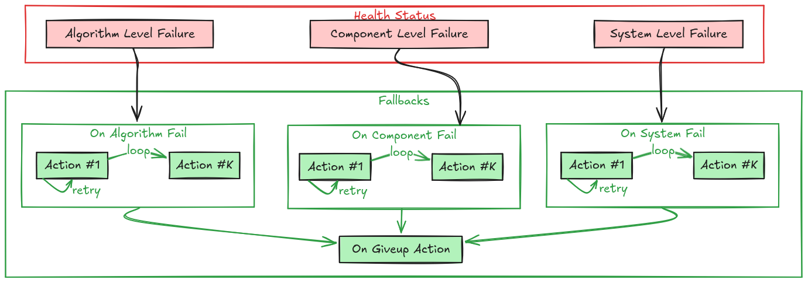

Fallbacks#
Fallbacks are the self-healing mechanism of a Sugarcoat component. They define the set of Actions to be executed when a failure is detected in the component’s Health Status.
Instead of crashing or stopping when an error occurs, a Component can be configured to attempt recovery strategies, such as restarting a specific algorithm, re-initializing a driver, or, in the worst case, shutting down or broadcasting a failure to the rest of the system.
{kind=link}

Component Fallbacks#
Failure Hierarchy#
The Component checks its internal health status at the defined component loop_rate. If a failure is detected, it selects the appropriate fallback strategy based on the specific type of failure. The priority is handled in the following order:
System Failure (on_system_fail): Failure external to the component (e.g, “Failed to collect all required inputs”), or a critical system-level failure (e.g., “Out of memory”).
Component Failure (on_component_fail): Failures of the component shell or node (e.g., “Driver disconnected”).
Algorithm Failure (on_algorithm_fail): Failures specific to the internal logic/algorithm (e.g., “Path planner failed to find a path”, or “ML model client failed to connect to the server”).
Generic/Any Failure (on_any_fail): A catch-all strategy for any failure not handled by a specific policy above.
If a specific fallback is not defined (is None), the system checks the next applicable level (usually falling through to on_any_fail).
Note
Components do not have any default fallback behavior. Fallbacks can be defined per component or for the whole component graph.
Fallback Strategies#
A Fallback consists of an Action (or a list of Actions) and a Retry Policy.
Single Action Strategy#
When a single action is defined, it is executed every time the associated failure is caught until:
The action returns
True(indicating successful execution and the component is considered healthy again).The
max_retriescount is reached. Ifmax_retriesisNonethen the action will be re-tried indefinitely.
If max_retries is reached, the component enters the Give Up state.
Multi-Step Strategy (List of Actions)#
You can define a sequence of actions to try in order. This is useful for tiered recovery (e.g., “First try to reset the connection. If that fails, try restarting the whole node”).
Execution Flow: The system attempts the first action in the list.
Retries: Each action in the list is attempted
max_retriestimes.Progression: If an action fails (doesn’t return
True) after its retries are exhausted, the system moves to the next action in the list.Give Up: If the last action in the list fails after its retries, the component enters the Give Up state.
The Give Up State#
When all strategies have failed (all retries of all actions exhausted), the component executes the on_giveup fallback. This is typically used for final cleanup or to permanently mark the node as dead.
Declaring Failures#
Important: Fallbacks are only triggered if the component reports a failure. When writing custom components, it is your responsibility to detect errors in your main loop or callbacks and update the self.health_status object.
You should use the following methods to report status:
self.health_status.set_fail_algorithm(optional_failed_algorithm_name_or_names)self.health_status.set_fail_component(optional_failed_component_name_or_names)self.health_status.set_fail_system(optional_failed_topics_name_or_names)
Once the status is set to a failure state, the component internal check will automatically begin executing the configured fallback actions.
Defining Custom Fallbacks in your Component#
You can create custom recovery methods in your component. These methods should return bool (True if recovery succeeded, False otherwise). You can also use the @component_fallback decorator to ensure that fallback methods can only be called after the component is configured and running.
Example: Custom Driver with Health Checks In this example, the _execution_step checks the hardware connection. If it fails, it sets the component status to failed. This triggers the try_reconnect fallback.
from ros_sugar.component import BaseComponent, component_fallback
from ros_sugar.action import Action
class MyDriver(BaseComponent):
def __init__(self, *args, **kwargs):
super().__init__(*args, **kwargs)
# Configure the fallback behavior
# If the component fails, try to reconnect
self.on_system_fail(fallback=Action(self.try_reconnect), max_retries=3)
# If reconnection fails 3 times, give up and shutdown
self.on_giveup(fallback=Action(self.safe_shutdown))
def _execution_step(self):
"""Main loop of the driver"""
try:
# Normal operation
data = self.hardware_interface.read()
self.publish_data(data)
# Explicitly mark as healthy if successful
self.health_status.set_healthy()
except ConnectionError as e:
self.get_logger().error(f"Hardware error: {e}")
# [IMPORTANT] Declare the failure to trigger the fallback!
self.health_status.set_fail_system(self.hardware_interface.name)
@component_fallback
def try_reconnect(self) -> bool:
"""Attempt to reconnect to the hardware"""
self.get_logger().info("Fallback: Attempting to reconnect...")
success = self.hardware_interface.connect()
if success:
self.get_logger().info("Reconnection successful!")
return True # Signals that recovery worked
return False # Signals that recovery failed, will retry or move to next step
@component_fallback
def safe_shutdown(self) -> bool:
"""Park the robot and stop"""
self.get_logger().error("Giving up: Shutting down driver.")
self.robot.stop()
return True
Programming Fallbacks in your Recipe#
You can configure a component’s fallbacks directly in your recipe by calling:
on_fail(action, max_retries=None): Sets the fallback for Any failure (the catch-all).max_retries=Noneimplies infinite retries for a single action.on_component_fail(action, max_retries=None): Sets the fallback specifically for component-level failures.on_algorithm_fail(action, max_retries=None): Sets the fallback specifically for algorithm-level failures.on_system_fail(action, max_retries=None): Sets the fallback for system-level failures.on_giveup(action): Sets the final action to execute when all other fallbacks have failed.
from ros_sugar.core import BaseComponent
from ros_sugar.actions import ComponentActions
my_component = BaseComponent(component_name='test_component')
# Set fallback for component failure to restart the component
my_component.on_component_fail(fallback=ComponentActions.restart(component=my_component))
# Change fallback for any failure
my_component.on_fail(fallback=Action(my_component.restart))
# First broadcast status, if another failure happens -> restart
my_component.on_fail(fallback=[Action(my_component.broadcast_status), Action(my_component.restart)])